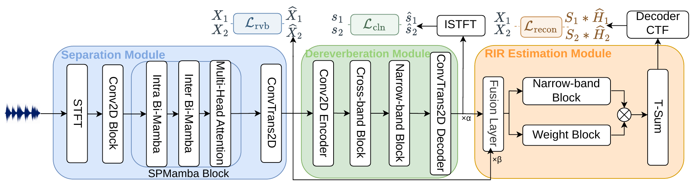

DAMSEP: Distance-Aware Monaural
Source Separation using
Multi-RIR Estimation
Overview
DAMSEP jointly recovers source signals and source-specific acoustic responses from a single-microphone mixture. It combines source separation, shared dereverberation, and complex convolutive transfer function (CTF) estimation through source supervision and reverberant reconstruction. The decoded room impulse responses (RIRs) provide relative near/far ordering through their direct-to-reverberant ratios (DRRs).
Method

Test Examples
Six examples from the test set, with both sources within 2.5 metres of the microphone. Select a sample to update the source geometry, audio examples, and RIR comparisons.
Ground-truth geometry
| Source | x | y | z | Distance |
|---|
All values are in metres. Distances are measured in 3D from each source to the reference microphone.
Figure 2. XY projection relative to the microphone. Coordinates and distances are ground truth; the model predicts relative near/far order.
Audio Examples
Compare the separated near and far sources with the references and the SPMamba baseline. Each clip is 4 seconds at 8 kHz.
Input mixture
RIR Comparisons
Ground-truth and estimated room impulse responses, with the corresponding energy decay curves.
Impulse response
Energy decay curve
Figure 3. RIR waveforms are peak-normalized and polarity-aligned for display. Time is relative to the aligned direct arrival. Energy decay is shown down to −60 dB.
Direct-to-reverberant ratio (DRR)
Higher DRR is interpreted as the nearer source. The geometric near/far label is used only to check the inferred order.